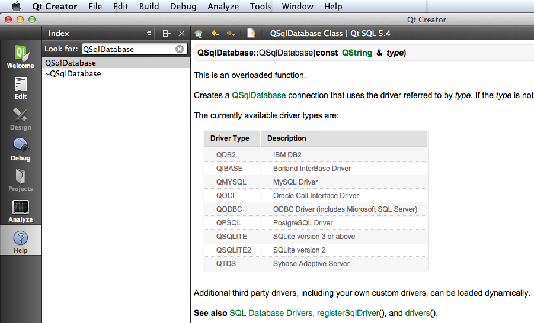
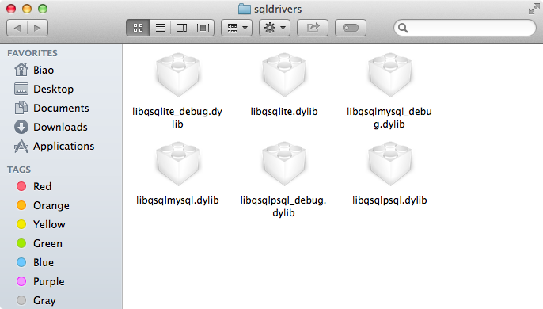

Qt 通过不同的数据库驱动来实现访问不同的数据库，类 QSqlDriver 是一个抽象的基类，是所有数据库驱动类的基类。
Qt 支持的数据库
Qt 支持访问很多不同的数据库，例如 Sqlite, MySQL, SqlServer 等，但是 Qt 具体都支持哪些数据库呢？通过下面介绍的方法就可以找到答案。
1. 在 QtCreator 的帮助中搜索 QSqlDatabase，找到

这里列出了 Qt 目前支持的所有数据库，但是并不代表在我们的程序里就可以直接使用代码访问这些数据库了，这里的所谓支持，是指 Qt 提供了访问这些数据库的 插件的代码，其中有些已经编译成了可以直接使用的插件，有的没有编译。如果想要访问的数据库不包含在里面，我们就需要按照 Qt 的规范去开发数据库驱动插件，至于怎么做可以在 QtCreator 帮助里搜索 SQL Database Drivers，在最下面可以找到 How to Write Your Own Database Driver。
2. 有哪些数据库插件已经编译好可用：
- 在
plugins/sqldrivers目录中列出了所有编译好的数据库插件，下图为 OS X 里的截图:
 - 使用代码:
qDebug() << QSqlDatabase::drivers()，输出:("QSQLITE", "QMYSQL", "QMYSQL3", "QPSQL", "QPSQL7")，说明访问 Sqlite, MySql, MySql3, PostgreSql, PostgreSql7 等不需要我们自己编译驱动插件，但是如果想访问 SqlServer 的话，就得我们自己编译驱动了。
编译数据库驱动插件：
例如我们想访问 Oracle，Qt 已经提供了 Oracle 驱动插件的代码，但是在 sqldrivers 目录里并没有其编译好的可用插件，那么我们就需要自己去编译驱动插件了。编译的方法可以在 QtCreator 帮助里搜索 SQL Database Drivers，找到 How to Build the OCI Plugin on Windows，How to Build the OCI Plugin on Unix and Mac OS X。
按照 QtCreator 帮助里的说明也不一定就能编译成功，因为有些细节里面没有提到，这有可能就是编译失败的因素之一。编译不同数据库的驱动的方法不尽相同，就算是同一个数据库，在不同的 Qt 版本，在 Windows 和 OS X 下的准备和编译步骤都可能相差很大，需要的时候，可以通过网络搜索，尝试其他人记录的准备和编译步骤。